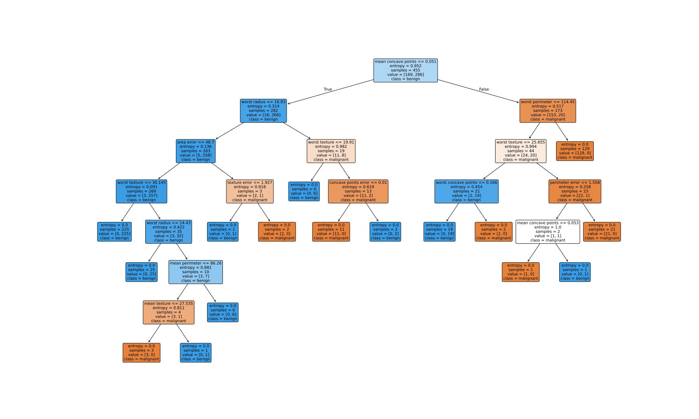

人工知能 (AI) と機械学習 (ML)、ニューラルネットワークの関係は 以下のようになっている:
この処理を非常に大規模かつ高速にやると、人間にとっては 「賢そう」に見える。
次のうち「探索問題」として定義可能なものはどれでしょう?
たとえば、以下のような処理を考える。 100×100ピクセルの画像が与えられたとき、 それが「人間の顔か否か」を判定するプログラムを作りたい:
| 画像 | 顔らしさ |
|---|---|
| 0.95 | |
| 0.87 | |
| 0.02 |
このようなプログラムは頑張れば人間にも作れるかもしれない。が、非常に難しい。 そこで...
つまり、
機械学習では、答えの「よさそう度」は比較的簡単にわかる:
教師つき学習で以下のものを学習させたい。 学習用データとして何が必要?
機械学習の前提条件:
機械学習における大きな問題: 「ありうるプログラム」は無限に存在する中で、どうやって絞り込むか?
答え: 機械学習で探索するプログラムは JavaScriptやPythonのコードではなく、 限定された形の「プログラムもどき」を使う。
ニューラルネットワーク とは、 以下のような人間の神経回路を模した架空の装置を「プログラムもどき」として使うものである。
しかし、まず機械学習の概念をよりよく理解するために、 もっと簡単な教師つき学習方式である 決定木を見てみよう。
決定木とは、
if文の集合だけからなるプログラムのことである:
if 変数 == 値1:
return 答えA
if 変数 == 値2:
return 答えB
...
たとえば「ある年・月の日数」を推定する決定木を考えてみる。 (人間は完全な規則を知っているが、ここではデータだけをもとに推測させる)
年 (y) | 月 (m) | 日数 (n) |
|---|---|---|
| 2016 | 1 | 31 |
| 2016 | 2 | 29 |
| 2016 | 4 | 30 |
| 2016 | 7 | 31 |
| 2016 | 8 | 31 |
| 2017 | 2 | 28 |
| 2017 | 4 | 30 |
| 2017 | 6 | 30 |
| 2017 | 9 | 30 |
| 2017 | 11 | 30 |
| 2018 | 1 | 31 |
| 2018 | 2 | 28 |
| 2018 | 3 | 31 |
| 2018 | 10 | 31 |
| 2020 | 5 | 31 |
| 2020 | 12 | 31 |
まず、重要な仮定:
n は、与えられた変数 y と m だけから推測可能である」
ここで、推測のヒントとなる y や m のような変数を
特徴量 または 素性 とよぶ。
これらの特徴量を使って、以下の2通りの決定木を作ることができる:
y = 2017 → 30
y = 2016, 2018, 2020 → 31
m = 2 → 28
m = 4,6,9,11 → 30
m = 1,3,5,7,8,10,12 → 31
上の 16件のデータに対して、決定木 A と 決定木 B はどれくらい「よい」か、測定してみよう。
年 (y) | 月 (m) | 決定木A | 決定木B | 日数 (n) | ||
|---|---|---|---|---|---|---|
| 2016 | 1 | 31 | ||||
| 2016 | 2 | 29 | ||||
| 2016 | 4 | 30 | ||||
| 2016 | 7 | 31 | ||||
| 2016 | 8 | 31 | ||||
| 2017 | 2 | 28 | ||||
| 2017 | 4 | 30 | ||||
| 2017 | 6 | 30 | ||||
| 2017 | 9 | 30 | ||||
| 2017 | 11 | 30 | ||||
| 2018 | 1 | 31 | ||||
| 2018 | 2 | 28 | ||||
| 2018 | 3 | 31 | ||||
| 2018 | 10 | 31 | ||||
| 2020 | 5 | 31 | ||||
| 2020 | 12 | 31 |
すべての教師つき機械学習には 2つのフェーズが存在する:
重要なこと:
ニューラルネットワークの入力と出力は、以下のように定義される:
入力と出力は、0〜1 の範囲で数値化できるものであればなんでもよい。 したがって、画像のようなものも「各ピクセルの RGB値」を個別の入力と考えれば、 入力として使える。
各ノードは、非常に単純な仕組みである:
ニューラルネットワークの最終的な出力は、以下のような関数として表現できる。
ニューラルネットワークは、各ノード間の「重み」w1, w2, w3, ... さえ うまく調整すれば、非常に複雑な計算や判断ができる。
例. 3層のニューラルネットワーク (576ノード + 100ノード + 10ノード) を使って、手書き数字認識をおこなう。
ニューラルネットワークを使って以下の関数を学習したい。 「入力」と「出力」はどのような量を使えばよい?
今日ニューラルネットワークがこれほど流行している理由は:
ニューラルネットワークには、以下のような特徴がある:
| 損失 | = | 「現在のモデルの悪さ」を表す数値 |
| = | (出力値 - 正解値)2 | |
| = | (σ(σ(入力1×w1 + 入力2×w2 + 入力3×w3 + ...) × w4 + ...) - 正解値)2 |
以下の学習タスクで、損失が 0 の状態とはどんな状態か? 損失が大きい (悪い) 状態とは、どんな状態か?
ここで、数学的なトリック:
式 ax + by
は、xとyを変数とした関数
f(x, y)
とみなすこともできるし、aとbを変数とした関数
f(a, b)
とみなすこともできる。
同様に、ニューラルネットワークの損失
するとニューラルネットワークの「推論」とは:
そしてニューラルネットワークの「訓練(学習)」とは:
でも、この言い換えにどういう意味があるのか?
ニューラルネットワークには、さらに以下のような特徴がある:
勾配とは?
10個のスライダーを動かして、損失がなるべく小さくなるようにしよう。
| 損失 (ゼロが目標) | |||||||||
上の例を実際にやってみると、なかなか一筋縄ではいかない。
では、まったく同じ問題の「ヒントつきのバージョン」を紹介する。
10個のスライダーを動かして、損失がなるべく小さくなるようにしよう。 各スライダーの下に、ヒント「↓」「↑」で表示される。
| 損失 (ゼロが目標) | |||||||||
ここでのヒントが「勾配」に相当する。 ヒントとして表示された矢印「↑」「↓」は各パラメータの勾配の向きを表している。
この問題は、曲線で表された関数に対して、もっとも低い点を見つけることに相当する。 このように、勾配を使って最適解を見つける方法を 勾配降下法 (gradient descent) という。
結論:
ニューラルネットワークを決定するもの:
以前のニューラルネットワークは、固定長のデータのみを得意とし、 テキストや言語などの可変超データの扱いは苦手だったが、 transformer の発明により、言語を扱えるようになった。
上で例として挙げた決定木はごく単純だが、実際の決定木はかなり複雑になりうる。 ニューラルネットワークでは、学習された重みを見ても人間には何がどう動いているのかよくわからないが、 決定木は学習結果を人間が読んで理解できるという利点がある。 そのため、決定木は実は機械学習ではよく使われている。
